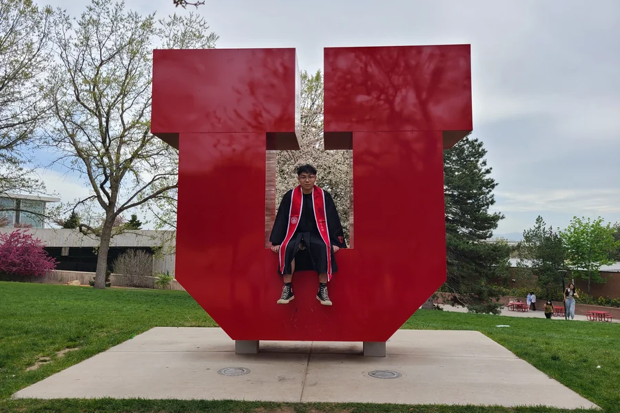
李天舒 · 3D 设计师 · 成都 · 求职中
你好，我是 茄子
我是李天舒的猫，到今天陪了他三年，也是你在本站的向导。 这里放着他做的东西：3D 建模、交互游戏设计，还有他带学生做的作品集案例。 想找他的话，页面底部有邮箱。
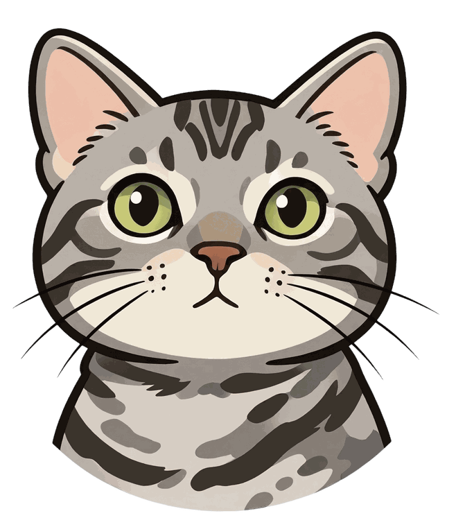
李天舒的个人经历
- 7年游戏设计 / 3D 建模经验
- 5年艺术留学教育行业经验
- 30+一对一客户学员
- 200+OFFER 案例
关于作者
这是李天舒，3D 设计师。普渡大学图形学硕士，本科在犹他大学读游戏设计—— 两段学历其实在干同一件事：把 3D 做到能在引擎里跑起来。
他平时的工作流是 Maya 起形、ZBrush 做高模、Substance Painter 贴材质， 最后在 Unity 或 UE5 里搭景、打光、压性能。VR 场景做得最多，也习惯在头显里一遍遍测—— 穿模、掉帧、贴图糊，他都得亲手看过才算完。现在他在上海做游戏建模和作品集辅导，接下来想回成都。
- 目前
- 上海洛素 · 游戏建模
- 工具
- Maya、ZBrush、Substance Painter
- 引擎
- Unity、UE5、VR 性能优化
- 学历
- 普渡大学 图形学 硕士
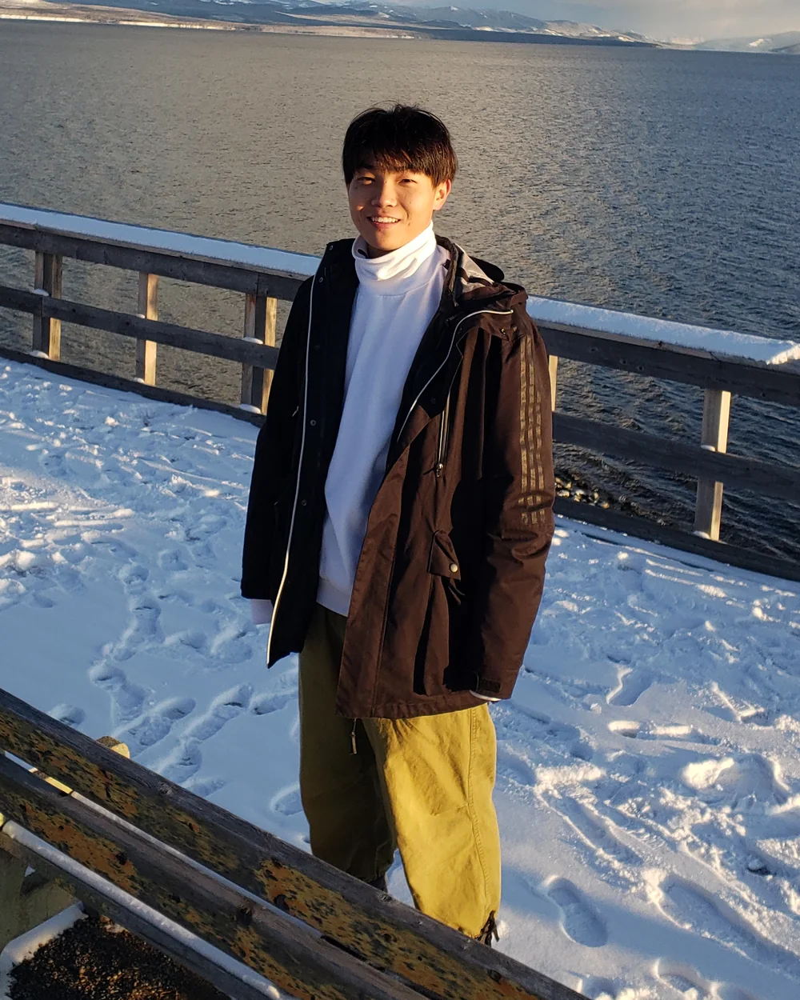
教育经历
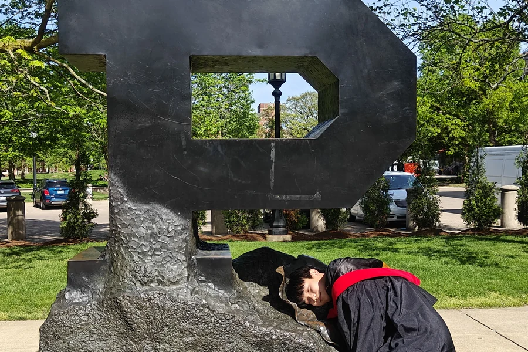
工作经历
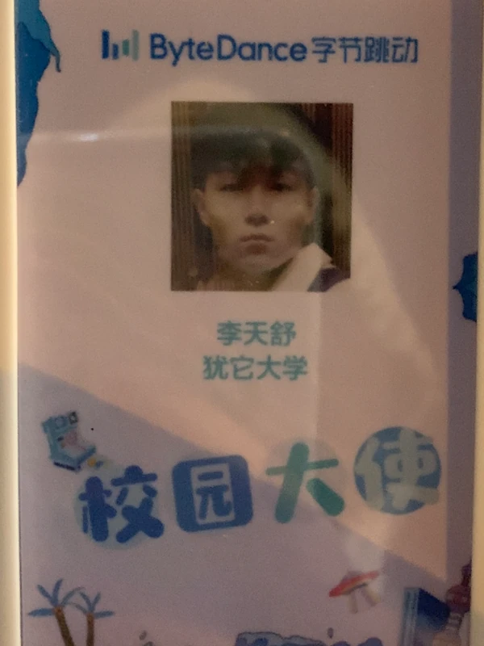
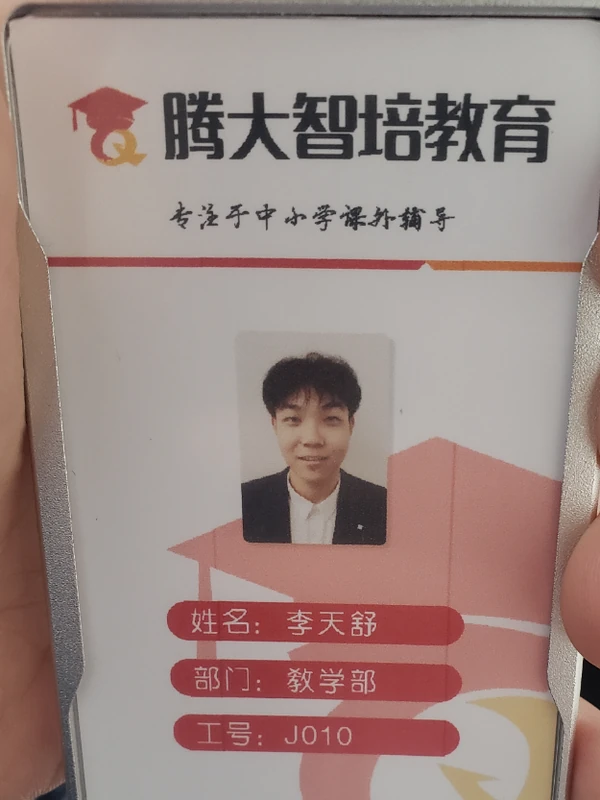
个人作品集
完整版 · 在框里上下滚动
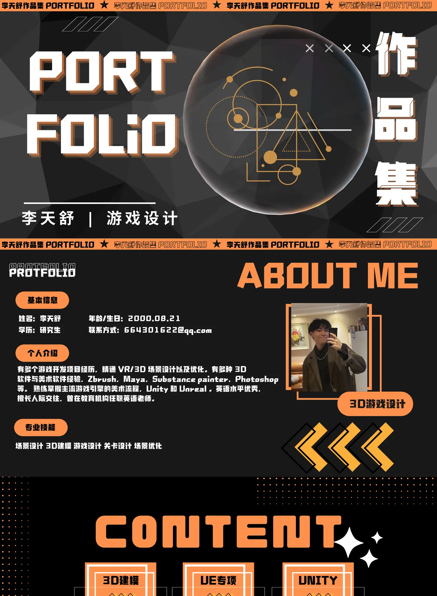
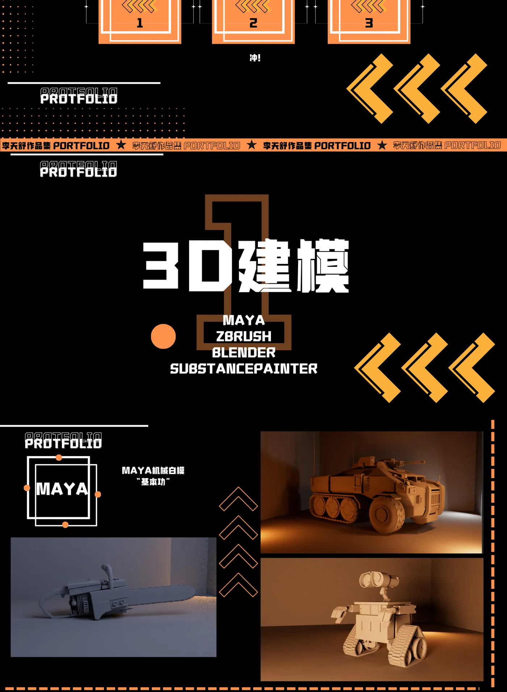
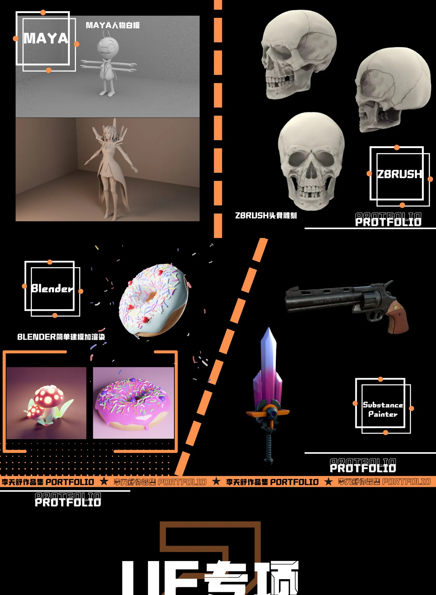
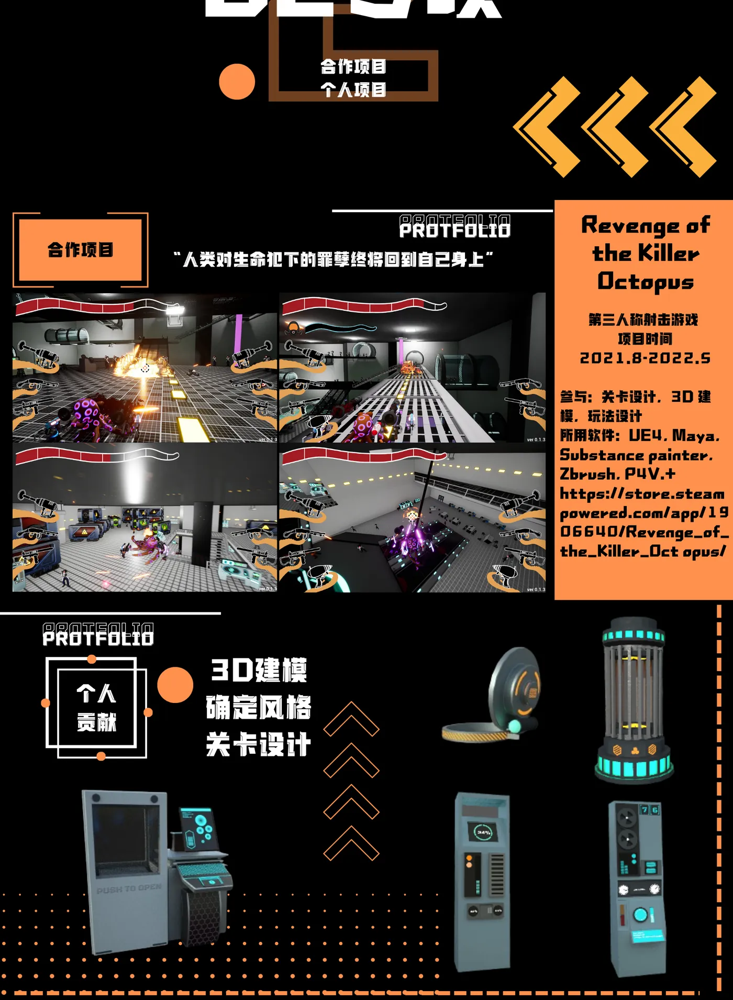
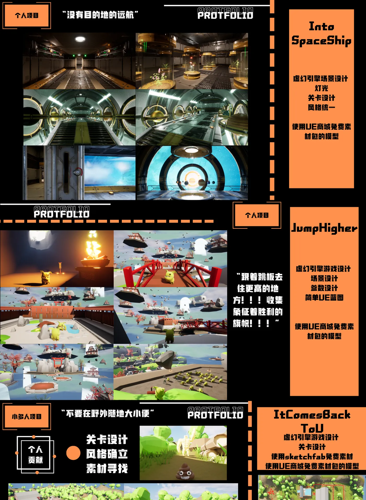
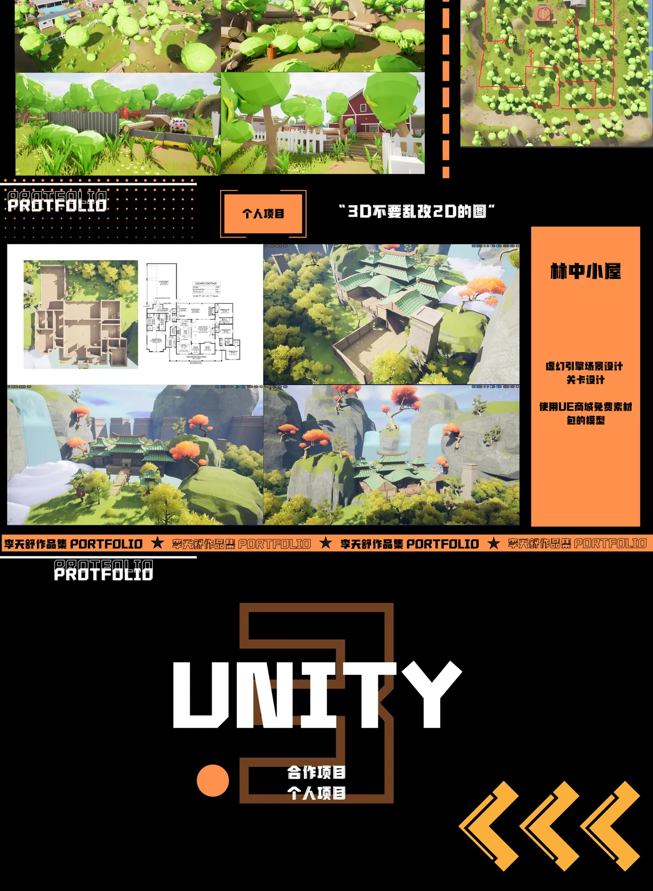
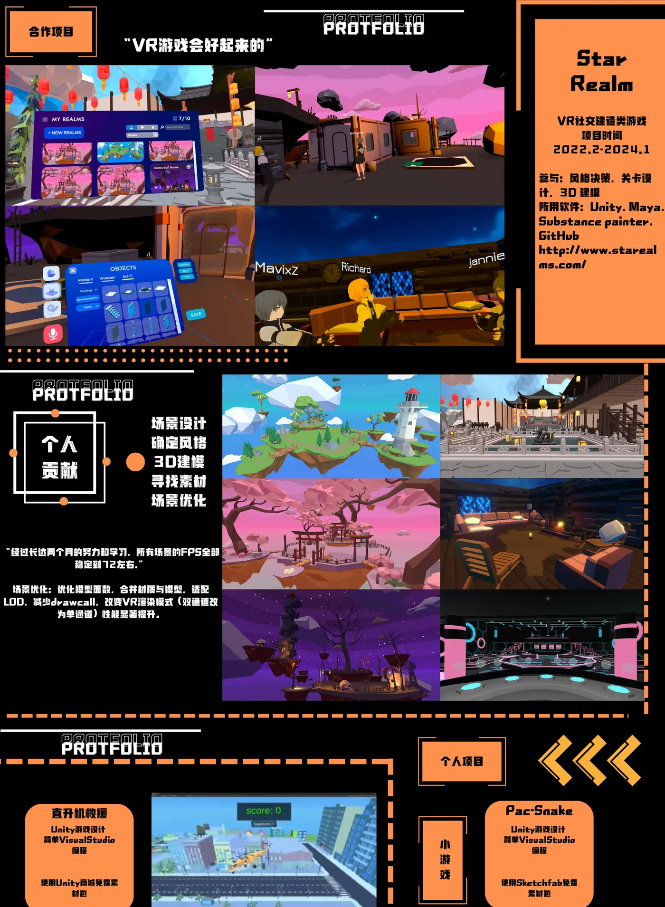
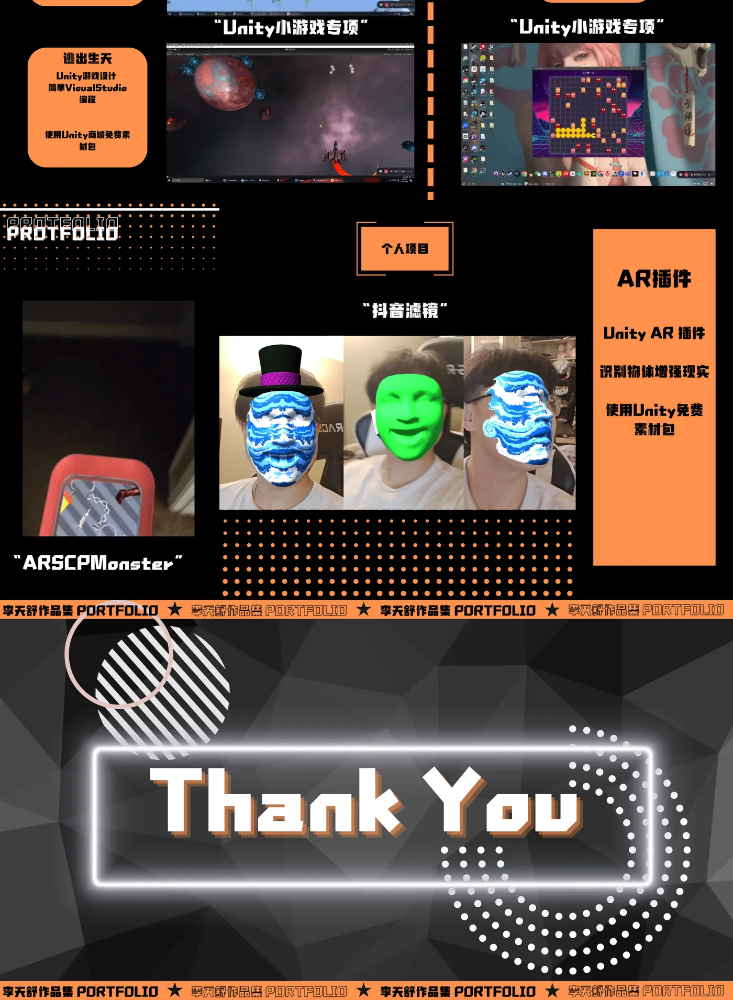
↓ 在框内滚动
项目经历
2021 — 2026 · 2 个项目
艺术教育
2024 — 2026 · 一年一张卡 · 点小人看作品
示例数据
名校录取案例
—
优秀学员作品集展示